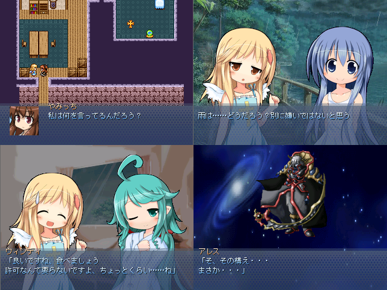

保存資料：2019-01-29の公開ページを再生しています。原HTMLと画像の載荷は保存済みです。
 |
|
| 作者：かりかりん | |
| ツクール：2000 | |
| ジャンル：読むゲ | |
| 配信/投稿：可/可 | |
| 作者コメント： 雨がさんさんと降っていた、あの日 ――私は、雨の中で踊るあなたを偶然見かけた 1時間程度の読むゲ＋時々見るゲです ちなみに、前作「ライチ・イン・ナイトメア」とは時系列が一緒の予定 もちろん、前作をやってなくても遊べます |
|
| 管理人コメント： ツッコミ所がなくなってしまった……と思ったら新しく用意されてるｗｗｗｗ |
|
| ダウンロード(13.5MB) / 感想掲示板 | |
| 前の作品 / 次の作品 / TOPへ戻る | |